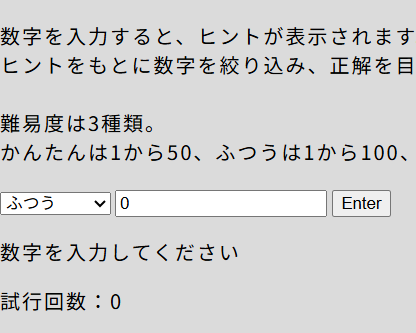
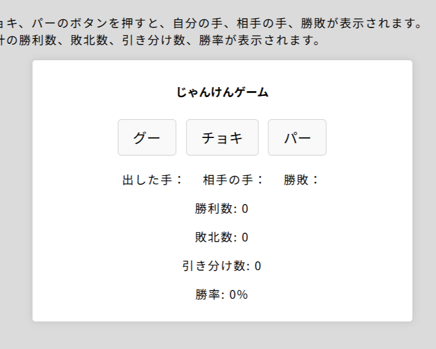
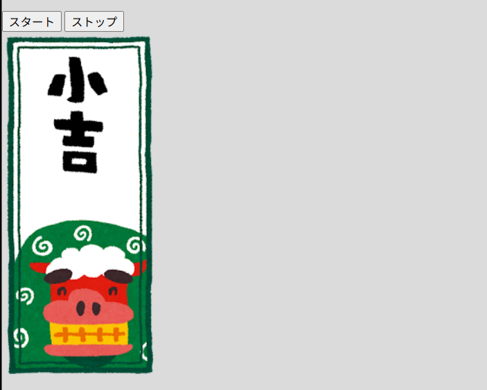
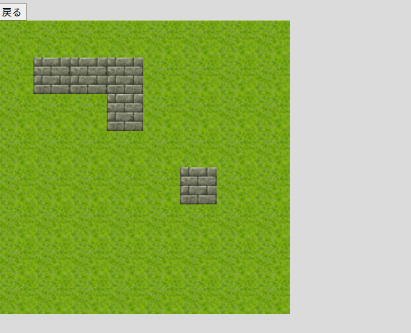
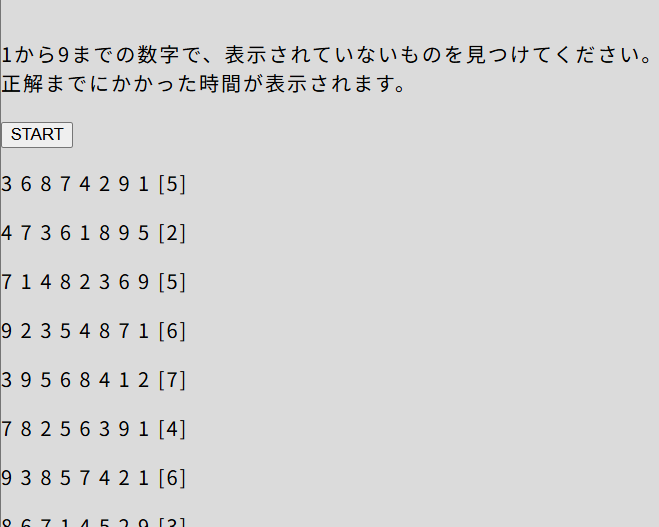
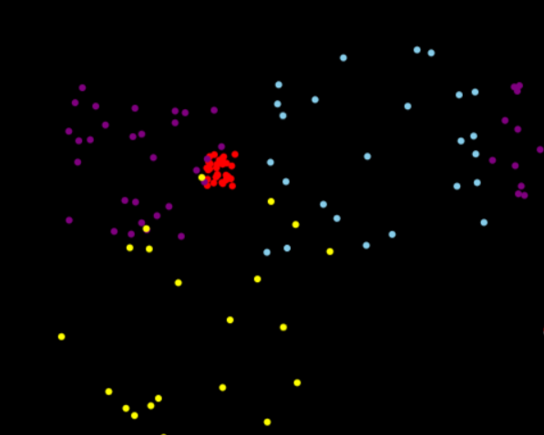
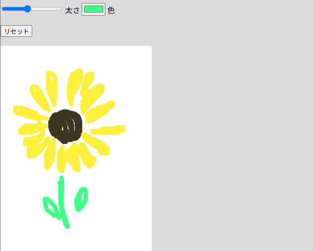
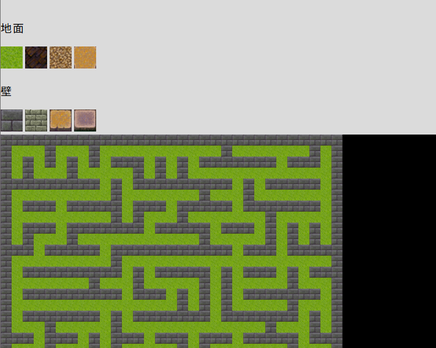
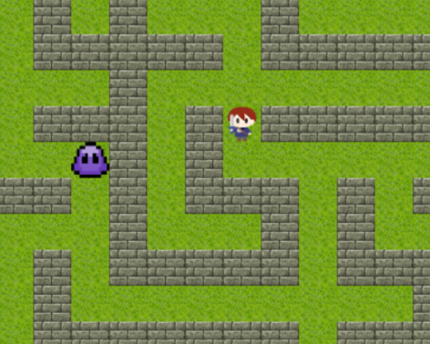
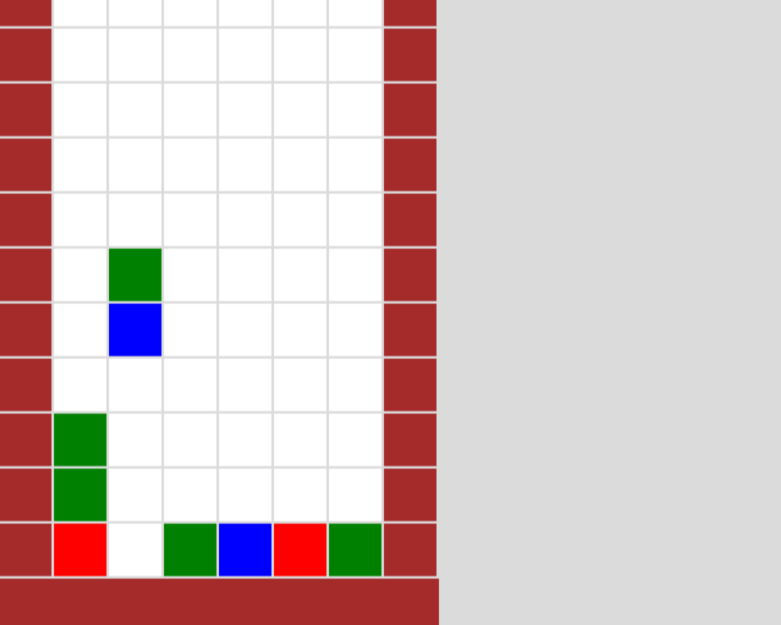

ゲーム制作課題一覧
これまでのゼミ活動では、ゲーム制作を通してJavaScriptの学習に取り組んできました。
このページでは、課題として制作したものの一覧を掲載しています。
一部のページでは、サンプル、改良版、ＡＩ版を使用して拡張したものを比較できます。(現在「06 アニメーション」のみ対応)
サンプル：講義内で提示されたプログラムです。
改良版 ：自分で考えた工夫を加えたプログラムです。学習のためAIを使用せずに制作しています。
ＡＩ版 ：ＡＩを使用してさらに改良を加えたプログラムです。

01 数当てゲーム
ヒントをもとに数字を絞り込み、正解を目指すゲーム。
難易度が変更できる。
▶Play

02 じゃんけんゲーム
じゃんけんができるゲーム。
勝敗数の累計や勝率も表示される。
▶Play

03 たなくじ
次々と表示される画像でおみくじを引ける。
▶Play

04 マップエディタ
クリックで画像を変更できる。
Undoを実装
▶Play

05 ラックナンバーサーチ
欠けた数字を見つけるゲーム。
タイムが表示される他、結果が出た後リスタートまで入力を受け付けなくなっている。
▶Play

06 アニメーション
多角形と円の描画を利用したアニメーション作品。
クリックで花火が打ちあがる。
▶Play

07 お絵描きツール
スマホ対応のお絵描きツール。
ペンの太さ、色を変えられる。
▶Play

08 迷路生成
棒倒し法により迷路を生成する。
地面と壁の画像を変更できる。
▶Play
09 迷路生成/キャラクター移動
迷路生成にキャラクターの表示を加えた改良版
▶Play

10 迷路生成/キャラクター移動
迷路生成にキャラクターの表示を加えた改良版
▶Play

11 ぷよぷよ1
ぷよぷよのアニメーション
▶Play
12 ぷよぷよ2
ぷよぷよを操作できる
▶Play
13 ぷよぷよ3
スコアの表示、落下速度上昇を追加
▶Play